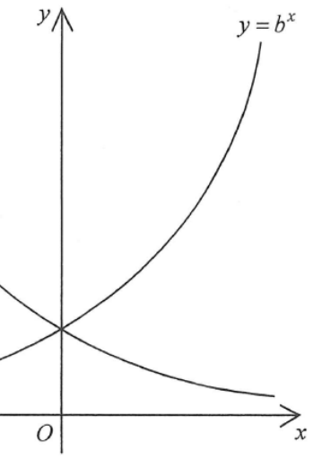

HKDSE Math 2020 Paper 2 Q33
Topic 8 · Laws of Indices, Exponential and Logarithmic Functions
The figure shows the graph of \( y = a^x \) and the graph of \( y = b^x \) on the same rectangular coordinate system, where \(a\) and \(b\) are positive constants. If the graph of \( y = a^x \) is the reflection image of the graph of \( y = b^x \) with respect to the \(y\)-axis, which of the following are true?
Original Figure

📈 Visual exploration
Drag the slider to change the base \(b\). The reflection property \(y=a^x\) being the mirror of \(y=b^x\) across the \(y\)-axis is visualised.
moving slider changes both curves; observe that the reflection property holds for any \(b>1\) with \(a=1/b\).
🧩 Step-by-step reasoning
Key hint
For an exponential function \(f(x) = k^x\) with \(k>0\):
• If \(k > 1\), the graph is increasing (rises to the right).
• If \(0 < k < 1\), the graph is decreasing (falls to the right).
Reflection across \(y\)-axis swaps \(x\) with \(-x\), leading to \(a = b^{-1}\).